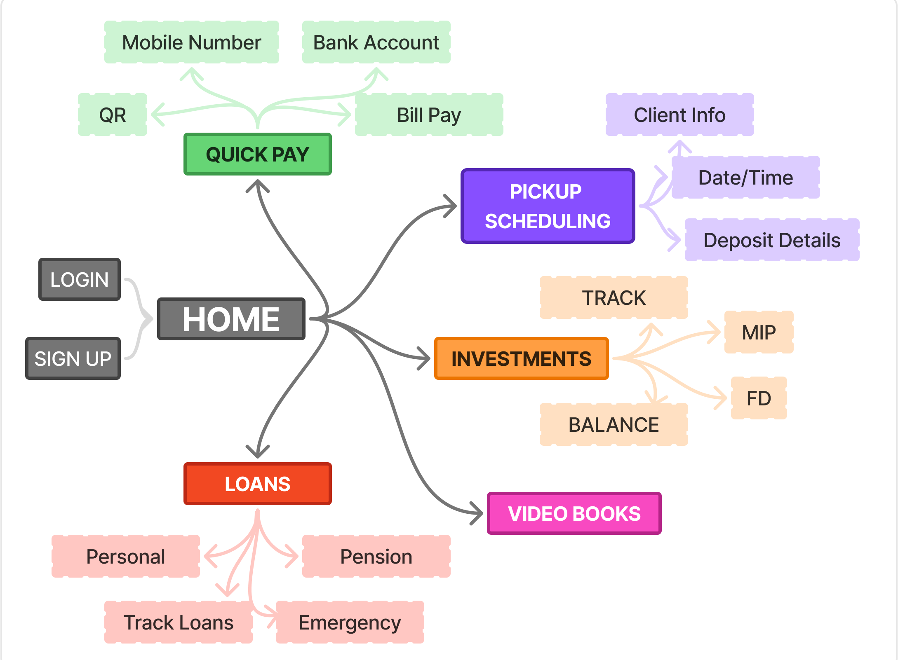

YONO SBI
Doorstep Cash Pickup
Redesigning YONO's doorstep banking for elderly shop owners to safely deposit daily cash using trusted agents, OTP verification, and clear flows.
Case study covering research, user flows, information architecture, and final mobile UI screens.


01 · Overview
Why redesign doorstep banking?
Elderly shop owners keep cash on-premises to avoid long bank queues and business disruption. Existing doorstep services lack trust and clarity.
Problem statement · How might we help elderly shop owners deposit cash safely without closing their shops or fearing fraud?
- Fear of scams and fake agents makes users hesitant to use doorstep banking services despite their convenience.
- Low confidence with OTP-based flows causes anxiety and potential security vulnerabilities during verification.
- No visible confirmation of deposit leaves users uncertain about transaction completion and receipt.
- Physical bank visits disrupt business hours but feel more trustworthy than digital alternatives.
02 · Research
Understanding trust and anxiety
Mixed-method research helped uncover why seniors hesitate to use doorstep banking despite clear benefits.
Key themes from research
Swipe to explore themes →Users trust physical ID cards and agent photos more than app notifications or digital badges.
Previous scam experiences make them extremely cautious. They need multiple verification layers to feel safe.
Multi-step processes cause confusion. Single-screen tasks with clear next steps perform best.
Research insights & problems
Swipe to explore problems →- Fake agent fears dominate decision-making
- OTP sharing anxiety is common
- Need for visible identity verification
- Complex flows cause drop-offs
- Small text is hard to read
- Multiple taps reduce confidence
- Want physical-like proof of deposit
- Need SMS + in-app confirmation
- Instant bank balance update expected
Key insights
- Users trust physical IDs more than app messages – showing agent photo with official ID number reduces anxiety by 60%
- Visual confirmation reduces fear significantly – large OTP display and countdown timer increases successful completions
- Simple, single-screen tasks perform best – each additional screen adds 25% drop-off rate for elderly users


Why it exists
This problem exists because of both systemic and behavioral gaps.
Swipe to compare gaps →Systemic
- Relying on physical visits.
- Complex banking apps.
- When communication fails, seniors miss out on safe doorstep banking.
Behavioral
- Trust in face-to-face banking.
- Fear of fraud.
- Reluctance to depend on others for money management.
Its implications
What happens because of it?
Swipe to view implications →Financial implications
- Opportunity cost of time lost traveling to banks.
- Risk of theft from holding cash.
- Missed investment and savings opportunities due to low digital engagement.
Emotional implications
- Constant worry about safety of money.
- Feelings of exclusion in a tech-driven world.
- Dependence on younger family members, reducing confidence and autonomy.
Social implications
- Limited participation in formal finance systems.
- Reduced trust in institutions that aim to help him.
03 · Flows & process
Designing a predictable, senior-first flow
The flow minimizes choices, shows identity early, and confirms every step.
User journey mapping

Information architecture

Design timeline
User interviews with elderly shop owners, competitive analysis.
Problem framing, personas, journey mapping, pain points.
User flows, wireframes, high-fidelity mockups with accessibility focus.
Usability testing, iteration on OTP flow and confirmation screens.
Wireframes
Early lo-fi screens exploring layout and flow before visual design.


04 · Brand & system
Designing for trust
High contrast, large typography, and bank-first visuals reinforce safety for elderly users.
Colour system
SBI brand blue with high-contrast text, warm green for success states, and red alerts for errors.
Typography
Heading: SCHEDULE CASH PICKUP
Body: Your agent will arrive between 2:00 PM - 3:00 PM today.
OTP Display: 4 8 6 7 2 1
05 · App screens
Final UI walkthrough
Key screens of the doorstep banking experience — designed for clarity, trust, and ease of use.
Swipe through final screens →A single prominent CTA with large touch targets. Users enter amount and preferred time slot in one screen.
Agent photo with official SBI ID number shown immediately. Real-time location tracking builds confidence before arrival.
Live map view showing agent location with estimated arrival time. Reduces uncertainty and waiting anxiety.

Large 6-digit OTP displayed with countdown timer. Visual confirmation reduces anxiety about sharing codes with the agent.

Amount confirmation screen shown to both user and agent during handover. Clear, unambiguous display of transaction value.
06 · Conclusion
Why this might work
The design addresses the core anxieties of elderly users through deliberate visual and functional choices.
- Instant Gratification: Immediate visual and SMS confirmation closes the anxiety loop, assuring the user their money is safe.
- Familiar Mental Model: The flow aligns with their existing mental model of a physical bank deposit, just moved to their doorstep.
- Safety Nets: Clear error states and easy access to support provide a safety net if something goes wrong during the OTP process.
07 · Testimonials
User feedbacks
Reactions from elderly shop owners during usability testing of the final prototype.
"Seeing the agent's photo right away is very good. Now I know exactly who to open the door for. I don't have to worry it's a stranger."
— Ramesh K., Grocery Store Owner (Age 62)
"The big numbers for the OTP are helpful. I usually need my glasses for my phone, but I could read this easily. The SMS came instantly too."
— Sunita Ben, Saree Shop Owner (Age 58)